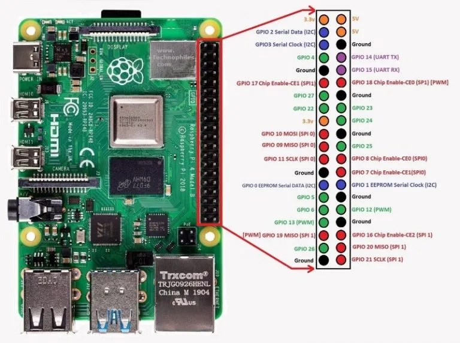
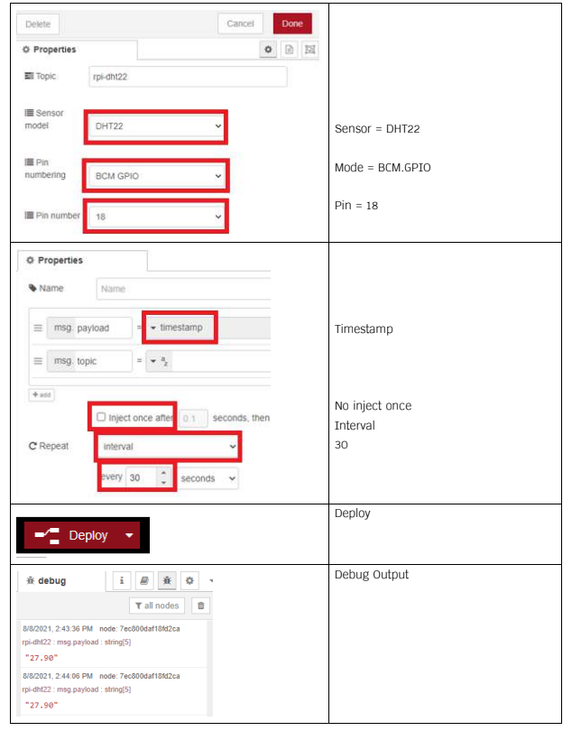

ข้อตกลงผู้อ่าน
***ข้อมูลจากบล็อกนี้จัดทำเมื่อวันที่ 19/07/2567***
Raspberry Pi คืออะไร

Raspberry Pi คือคอมพิวเตอร์ขนาดเล็กที่พัฒนาโดยมูลนิธิ Raspberry Pi Foundation ในสหราชอาณาจักร มีวัตถุประสงค์เพื่อส่งเสริมการเรียนรู้และการสอนด้านวิทยาการคอมพิวเตอร์และการเขียนโปรแกรม โดย Raspberry Pi มีขนาดเล็ก พกพาสะดวก และราคาถูก มาพร้อมกับฮาร์ดแวร์พื้นฐานที่สามารถเชื่อมต่อกับอุปกรณ์ต่างๆ ได้ เช่น หน้าจอ แป้นพิมพ์ เมาส์ และอุปกรณ์ต่อพ่วงอื่นๆ
คุณสมบัติทั่วไปของ Raspberry Pi:
- หน่วยประมวลผล (CPU) ARM-based
- หน่วยความจำ (RAM)
- พอร์ต USB สำหรับเชื่อมต่ออุปกรณ์ต่างๆ
- พอร์ต HDMI สำหรับเชื่อมต่อกับจอภาพ
- การเชื่อมต่อเครือข่าย (Ethernet/Wi-Fi)
- พอร์ต GPIO (General Purpose Input/Output) สำหรับเชื่อมต่อกับเซ็นเซอร์และอุปกรณ์ต่างๆ
การติดตั้งระบบปฏิบัติการให้ Raspberry PI
ในบทความนี้ จะสอนการใช้งาน Raspberry Pi เบื้องต้น ตั้งแต่การติดตั้งระบบปฎิบัติการลง Micro SD card ซึ่งในที่นี่คือ Raspbian โดยใช้กับบอร์ด Raspberry Pi 4 โดยทําใช้ระบบปฎิบัติการ Windows ในการติดตั้ง และ จําเป็นต้องต่ออินเตอร์เน็ตด้วย
อุปกรณ์ที่ต้องใช้
- บอร์ด Raspberry Pi 4
- Micro SD card class 10 ขนาด 16 GB ขึ้นไป
- สาย Micro USB
- สาย micro-HDMI
- หน้าจอแสดงผล (สามารถเชื่อมต่อแบบ HDMI ได้)
- USB Keyboard และ USB Mouse
- สาย LAN สําหรับเชื่อมต่อ Internet หรือ USB Wifi
- คอมพิวเตอร์ + Card Reader
การติดตั้งระบบปฎิบัติการลง MICRO SD CARD
วิธีที่ 1 – Install Raspberry Pi OS using Raspberry Pi Imager
- Step 1a: ดาวโหลดอิมเมจ OS จาก https://www.raspberrypi.org/software/ แล้วเลือก Raspberry Pi
- Step 2a: เมื่อดาวโหลดเสร็จเรียบร้อยแล้ว ให้ติดตั้ง image Setup
- Step 3a: เลือก OS เป็น Raspbian และเลือก SD Card
- Step 4a: Write OS image
- Step 5a: เมื่อติดตั้งเสร็จแล้วให้ถอด Micro SD card ออกจากคอมพิวเตอร์แล้วใส่ไปที่ Raspberry Pi ต่อไป
การเชื่อมต่อเมื่อเริ่มต้นใช้งานครั้งแรก
การอัพเดตโปรแกรม
อัพเดทโปรแกรมให้ใหม่ล่าสุดด้วยคำสั่ง:
sudo apt-get updateเข้า Terminal แล้วพิมพ์คำสั่งดังกล่าว แล้วกด Enter เพื่อทำการอัพเดทโปรแกรม.
จากนั้นอัพเดทโปรแกรมให้ใหม่ล่าสุดด้วยคำสั่ง:
sudo apt-get upgradeพิมพ์คำสั่งเสร็จแล้วกด Enter และกด Y แล้ว Enter เพื่อยืนยัน (ขั้นตอนนี้จะใช้เวลานาน).
เข้าใช้ Raspberry Pi ด้วยการรีโมต
- Step 1: จ่ายไฟให้ Raspberry Pi ตั้งค่า Remote Password = raspberry
- Step 2: กําหนดค่าครั้งแรก เพื่อให้สามารถใช้งานแบบ Remote Desktop ได้
- Step 3: ติดตั้ง ipscan24 จากนั้นค้นหา ip ของ Raspberry Pi (ต้องเชื่อม WIFI ในวงเดียวกัน)
- Step 4: ติดตั้ง VNC จากนั้นค้นหา ip ของ Raspberry Pi ใส่ username, password เพื่อเข้ารีโมต
Raspberry Pi_4_GPIO
ทดสอบ GPIO ด้วย Python
1. Python Switch Control LED (กดติด, ปล่อยดับ)
อุปกรณ์ที่ต้องใช้:
- Raspberry Pi 4
- LED
- สวิตช์ (push button)
- ตัวต้านทาน (Resistor) 1k โอห์ม (สำหรับ LED)
- ตัวต้านทาน (Resistor)
- สายจัมเปอร์
- บอร์ดเบรดบอร์ด (Breadboard)
การต่อวงจร:
- ต่อขา GPIO ของสวิตช์ไปที่ขา GPIO 16 (หรือเปลี่ยนขาตามที่ต้องการ)
- ต่อขาอื่นของสวิตช์ไปที่ ground
- ใช้ตัวต้านทาน ต่อระหว่างขา GPIO 11 กับ ground (pull-down resistor)
- ต่อขาแคโทดของ LED (ขาสั้น) ไปที่ ground
- ต่อขาแอโนดของ LED (ขายาว) ไปที่ขา GPIO 12 (หรือเปลี่ยนขาตามที่ต้องการ) ผ่านตัวต้านทาน
โค้ด Python:
import RPi.GPIO as GPIO
import time
# กำหนดหมายเลขขาของ GPIO
LED_PIN = 12
SWITCH_PIN = 16
# การตั้งค่าการใช้หมายเลขขา GPIO
GPIO.setmode(GPIO.BCM)
GPIO.setup(LED_PIN, GPIO.OUT)
GPIO.setup(SWITCH_PIN, GPIO.IN, pull_up_down=GPIO.PUD_DOWN)
# ฟังก์ชั่นหลัก
def main():
try:
while True:
# อ่านสถานะของสวิตช์
if GPIO.input(SWITCH_PIN) == GPIO.HIGH:
# สวิตช์ถูกกด, เปิด LED
GPIO.output(LED_PIN, GPIO.HIGH)
else:
# สวิตช์ไม่ได้ถูกกด, ปิด LED
GPIO.output(LED_PIN, GPIO.LOW)
# พักการทำงานเล็กน้อยเพื่อหลีกเลี่ยงการตรวจจับซ้ำๆ
time.sleep(0.1)
except KeyboardInterrupt:
pass
finally:
GPIO.cleanup() # รีเซ็ตการตั้งค่า GPIO
# เรียกใช้ฟังก์ชั่นหลัก
if __name__ == "__main__":
main()2. Python Switch Control LED (กดติด, กดดับ)
โค้ด Python:
import RPi.GPIO as GPIO
import time
# กำหนดหมายเลขขาของ GPIO
LED_PIN = 12
SWITCH_PIN = 16
# การตั้งค่าการใช้หมายเลขขา GPIO
GPIO.setmode(GPIO.BCM)
GPIO.setup(LED_PIN, GPIO.OUT)
GPIO.setup(SWITCH_PIN, GPIO.IN, pull_up_down=GPIO.PUD_DOWN)
# ตัวแปรเพื่อเก็บสถานะของ LED
led_state = False
def toggle_led(channel):
global led_state
led_state = not led_state # สลับสถานะ LED
GPIO.output(LED_PIN, led_state)
# ติดตั้งการทำงานของสวิตช์ (Interrupt) เพื่อเรียกใช้ฟังก์ชัน toggle_led เมื่อสวิตช์ถูกกด
GPIO.add_event_detect(SWITCH_PIN, GPIO.RISING, callback=toggle_led, bouncetime=300)
# ฟังก์ชั่นหลัก
def main():
try:
while True:
# รอการทำงาน
time.sleep(0.1)
except KeyboardInterrupt:
pass
finally:
GPIO.cleanup() # รีเซ็ตการตั้งค่า GPIO
# เรียกใช้ฟังก์ชั่นหลัก
if __name__ == "__main__":
main()3. Python Switch Control LED (Counter)
การเชื่อมต่อฮาร์ดแวร์:
- LED:
- ขาแคโทด (ขาสั้น) ต่อกับ ground
- ขาแอโนด (ขายาว) ต่อกับขา GPIO ผ่านตัวต้านทาน
- สวิตช์:
- ขา GPIO ของสวิตช์ต่อกับขา GPIO 16
- ขาอื่นของสวิตช์ต่อกับ ground
- ใช้ตัวต้านทาน ต่อระหว่างขา GPIO 16 กับ ground (pull-down resistor)
โค้ด Python:
import RPi.GPIO as GPIO
import time
# กำหนดหมายเลขขาของ GPIO
LED_PIN = 12
SWITCH_PIN = 16
# การตั้งค่าการใช้หมายเลขขา GPIO
GPIO.setmode(GPIO.BCM)
GPIO.setup(LED_PIN, GPIO.OUT)
GPIO.setup(SWITCH_PIN, GPIO.IN, pull_up_down=GPIO.PUD_DOWN)
# ตัวแปรเพื่อเก็บจำนวนการกด
switch_counter = 0
def count_switch(channel):
global switch_counter
switch_counter += 1 # เพิ่มจำนวนการกด
print(f"Switch pressed {switch_counter} times") # แสดงจำนวนการกด
# แสดง LED สำหรับเวลา 0.5 วินาที เพื่อให้รู้ว่า LED ถูกเปิด
GPIO.output(LED_PIN, GPIO.HIGH)
time.sleep(0.5)
GPIO.output(LED_PIN, GPIO.LOW)
# ติดตั้งการทำงานของสวิตช์ (Interrupt) เพื่อเรียกใช้ฟังก์ชัน count_switch เมื่อสวิตช์ถูกกด
GPIO.add_event_detect(SWITCH_PIN, GPIO.RISING, callback=count_switch, bouncetime=300)
# ฟังก์ชั่นหลัก
def main():
try:
while True:
# รอการทำงาน
time.sleep(0.1)
except KeyboardInterrupt:
pass
finally:
GPIO.cleanup() # รีเซ็ตการตั้งค่า GPIO
# เรียกใช้ฟังก์ชั่นหลัก
if __name__ == "__main__":
main()การติดตั้ง Node-RED
- ติดตั้ง Node-RED:
sudo apt update sudo apt install nodered - เริ่มใช้งาน Node-RED:
node-red-start - เข้าถึง Node-RED UI:
เปิดเว็บบราวเซอร์และไปที่
http://IPAddress:1880
Node-RED UI
Node-RED UI จะเป็นส่วนเสริมของโปรแกรม Node-RED เพื่อให้โปรแกรม Node-RED สามารถสร้าง UI ไว้สำหรับการแสดงผลผ่าน UI ได้
- ตรวจสอบว่า Raspberry Pi ของเรานั้นมี npm หรือไม่
npm -v - หากเป็นรุ่นที่ไม่รองรับให้ Update
wget https://www.npmjs.com/install.sh && sudo sh ./install.sh - หากไม่มีให้ทําการติดตั้ง
sudo apt-get install npm - เข้าไปใน Home ของ node-red
cd $HOME/.node-red - ติดตั้ง Node-RED UI
sudo npm install node-red-contrib-ui - เข้าเว็บบราวเซอร์
ใส่
IPAddress:1880ตามด้วย/uiก็จะแสดงหน้าของ Node-RED UI ขึ้นมา
Node-RED เพื่อควบคุมสวิตซ์กดแบบ กดติด กดดับ {Switch-LED 1 คู่}

Node-RED เพื่ออ่าน DHT-22 Sensor
- Installing this node requires three steps:
- Install the BCM2835 library from here.
- Install the node-dht-sensor dependency:
sudo npm install --unsafe-perm -g node-dht-sensor - Install this node:
sudo npm install --unsafe-perm -g node-red-contrib-dht-sensor - Reboot system:
sudo reboot
